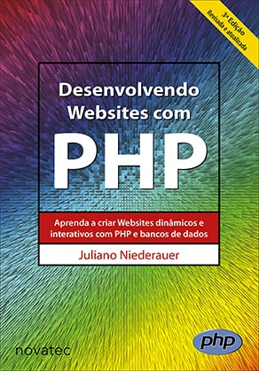
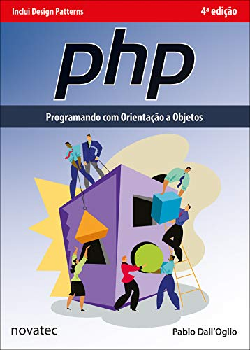

Menu
Plano de Ensino
Dia/Horário das aulas: terças-feiras, 08:00 – 12:00 (4 aulas)
Carga Horária: 60 horas
Sala do Google Meet: https://meet.google.com/gzh-kizk-yij (autenticar-se com a conta da Unicamp)
Professor e Contato*: Guilherme Palermo Coelho (gpcoelho@unicamp.br)
* Colocar [SI401] no início do campo “Assunto” do e-mail.
Monitor PED: Matheus Bernardelli de Moraes (m121214@dac.unicamp.br)
Monitores PAD:
- Daniel Fávaro Friol (d214725@dac.unicamp.br)
- Leandro Augusto Fabri (l201039@dac.unicamp.br)
Atendimento: use sempre o fórum “Dúvidas sobre a Disciplina”. Sua dúvida pode ser a de outro colega (e até já ter sido respondida). Questões pessoais devem ser tratadas diretamente com o professor (e-mail acima).
Objetivo: Colocar em perspectiva a programação para Web. Capacitar o aluno a compreender as principais linguagens de marcação e estilo. Capacitar o aluno a compreender e desenvolver scripts para execução em navegadores. Capacitar o aluno a compreender e desenvolver scripts para execução em servidores web.
Ementa: Elaboração de páginas web. Linguagens de marcação. Folhas de estilo. Javascript. Uso de linguagens de programação para geração dinâmica de páginas web. Uso de servidores web para armazenamento de sites. Atividades práticas de implementação de sistemas baseados nessas linguagens.
Metodologia de ensino:
- Aulas em vídeo sobre cada tópico;
- ATENÇÃO: as gravações de aula e videoaulas só poderão ser acessadas por alunos autenticados com a conta
Google/Unicamp. É terminantemente proibida a divulgação e distribuição de seu conteúdo (integral ou
parcialmente) a pessoas que não estejam matriculadas na disciplina SI401.
- Plantões para dúvidas no horário de aula (via Google Meet);
- Exercícios práticos individuais de fixação;
- Projeto em grupo:
- Com 03 avaliações parciais;
- Notas individuais baseadas na contribuição de cada aluno em cada etapa.
Bibliografia Básica:
Bibliografia Complementar:
- W3Schools Online Web Tutorials: https://www.w3schools.com/
- Mozilla Developer Network: http://developer.mozilla.org/
-
Silva, M. S. “Construindo sites com CSS e (X)HTML Sites controlados por folhas de estilo em cascata”. Novatec, 2008.

-
Silva, M. S. “JavaScript: Guia do Programador”. Novatec, 2010.

-
Niederauer, J. “Desenvolvendo Websites com PHP”, 2ª ed. Novatec, 2011.

-
Dall’oglio, P. “PHP: Programando com Orientação a Objetos”, 2a ed. Novatec, 2009.

Critério de avaliação:
Seja:
- P1 – Nota da primeira avaliação parcial do Projeto;
- P2 – Nota da segunda avaliação parcial do Projeto;
- P3 – Nota da terceira avaliação parcial do Projeto;
- P – Nota final do Projeto;
- T – Média dos exercícios práticos de fixação desenvolvidos ao longo do semestre;
- M – Média do aluno;
- MFinal – Média final no semestre;
- E – Nota do Exame;
- A nota final do projeto será dada por: 𝑃 = 0,20 ∙ 𝑃1 + 0,50 ∙ 𝑃2 + 0,30 ∙ 𝑃3;
- A média do aluno será dada por: 𝑀 = 0,75 ∙ 𝑃 + 0,25 ∙ 𝑇;
- Caso contrário: 𝑀𝐹𝑖𝑛𝑎𝑙 = mínimo(5,0; 0,6 ∙ 𝑀 + 0,4 ∙ 𝐸)
Observações:
- Não serão corrigidas atividades entregues após o prazo estabelecido;
- Caso sejam detectadas quaisquer formas de fraude nas atividades, todos os alunos envolvidos ficarão com média 0,0 na disciplina.
- Só poderão fazer o Exame alunos com 𝑀 ≥ 2,5.
Cronograma inicial (poderá sofrer ajustes ao longo do semestre):
Website desenvolvido por Victor Yukio Shirasuna. Faculdade de Tecnologia - Unicamp. 2021.